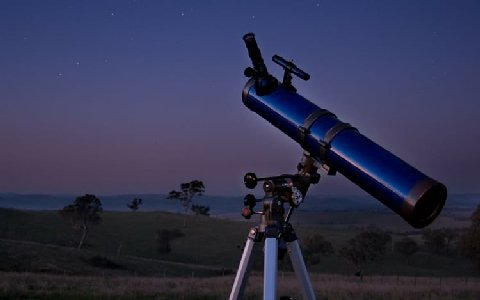

O telescópio instrumento utilizado para ver objetos que se encontram a uma distância muito grande da Terra. Ele tem a capacidade de ampliar e formar uma imagem virtual próxima à lente ocular, fazendo com que a imagem nos pareça maior do que a observada a olho nu.
Não somente os astrônomos, mas também qualquer pessoa que tenha um telescópio pode fazer observações de outros planetas, estrelas e galáxias.
Para a construção de um telescópio, o físico Galileu utilizou uma lente do tipo convergente e uma lente do tipo divergente. Em seu telescópio, a primeira lente, denominada objetiva, formava uma imagem real do objeto em questão. Já a segunda lente, denominada ocular, permitia fazer observação da imagem real bem detalhadamente, ampliando-a como se fosse uma lupa.
A lente ocular forma uma imagem virtual, portanto quanto maior for a imagem formada pela lente objetiva, e quanto maior for a ampliação da lente ocular, maior será a imagem observada pelo olho. Com o objetivo de formar uma imagem real grande, tem que ser utilizada uma lente com distância focal também grande. Já para se obter uma ampliação maior por parte da lente ocular, é necessário que esta tenha uma distância focal pequena, para que funcione como uma lupa.
O telescópio sofreu diversas modificações, sendo uma delas a substituição da lente objetiva por um espelho côncavo. Isso permitiu construir objetivas muito maiores do que as lentes, sem problemas de sustentação mecânica. Os espelhos devem ser segurados por baixo, enquanto as lentes precisam ser seguradas pelas bordas.
Outra vantagem conseguida com a utilização dos espelhos foi a ausência da aberração cromática, pelo fato de não mais existir dispersão da luz. O diâmetro da lente objetiva determina a quantidade de luz que será captada pelo telescópio. Por esse motivo é que os astrônomos fazem uso de telescópios com espelhos de diversos tamanhos de diâmetro para observar astros de baixa luminosidade.
Um fato que devemos levar em consideração é que a observação dos corpos celestes é prejudicada pela atmosfera. Isso acontece porque nossa atmosfera não é homogênea, ou seja, ela apresenta flutuações de densidade. Essa flutuação da densidade faz com que as imagens observadas pelos telescópios sofram distorções. A solução encontrada para solucionar tal fato foi a de colocar um telescópio fora da atmosfera, em órbita ao redor da Terra.